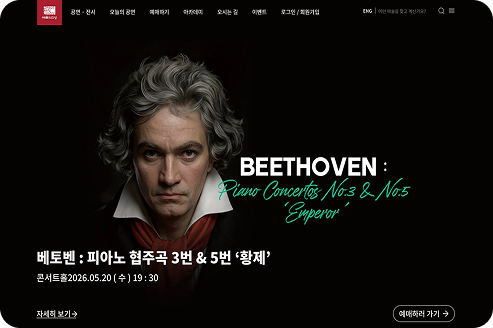
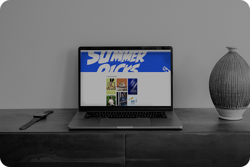

ASPIRING
WEB DESIGNER
& PUBLISHER
ABOUT & PORTFOLIO
디자인과 퍼블리싱을 함께 배우며 성장하고 있습니다.
디테일을 고민하고,
창의적인 아이디어를 직관적인 UI로 구현합니다.
웹디자인을 시작하게 된 계기_
Portfolio
사용성과 시각적 디자인을 중심으로 완성한 프로젝트입니다.

예술의 전당 리뉴얼
예술의전당 홈페이지의 복잡한 정보구조를
사용자 중심으로 개선하고,
공연·전시 콘텐츠와 공간 정보를
직관적으로 탐색할 수 있도록 재구성했습니다.
가독성과 사용성을 높여 처음 방문한 사용자도
원하는 정보를 쉽고 빠르게 찾을 수 있도록 리뉴얼했습니다.

29CM 리뉴얼
29CM의 복잡한 정보구조를 사용자 중심으로 개선하고,
상품 탐색이 쉽도록 카테고리와 레이아웃을 재구성했습니다.
브랜드 감성을 유지하면서 가독성을 높였으며,
인기 상품과 큐레이션 콘텐츠를 강화해
탐색 경험을 향상시켰습니다.
Developing
since 1966, when designers at Letraset and James Mosley, the librarian at St Bride Printing Library in London, took a 1914 Cicero translation and scrambled it to make dummy text for Letraset's Body Type sheets. It has survived not only many decades.
Developing
since 1966, when designers at Letraset and James Mosley, the librarian at St Bride Printing Library in London, took a 1914 Cicero translation and scrambled it to make dummy text for Letraset's Body Type sheets. It has survived not only many decades.
Design
직관적인 디자인으로 더 나은 경험을 만듭니다.
패션 세로 배너
봄 신상 배너 디자인
단독 패션 배너
얼굴 보정 이목구비
가방 정사각형 배너